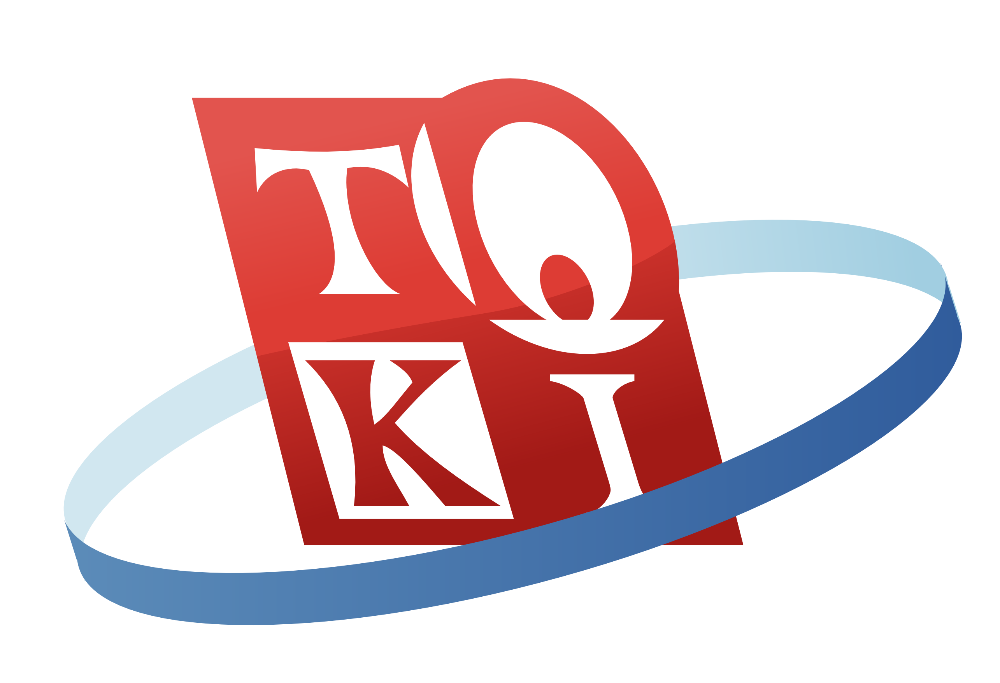

Ikatan Alumni TOKI
Ikatan Alumni TOKI adalah organisasi non-profit yang bersifat independen atau berjenis nirlaba yang mewadahi alumni Tim Olimpiade Komputer Indonesia untuk mengembangkan potensinya dalam memajukan Perkembangan Teknologi Informatika.